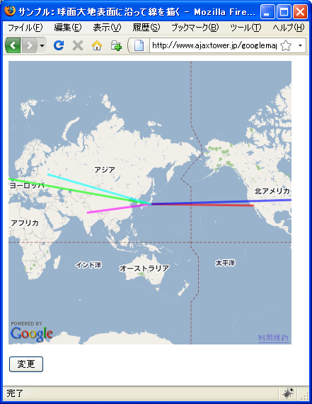
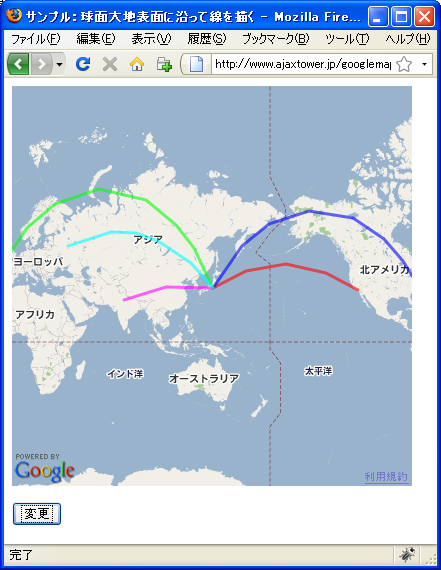

��大地表��沿��線を��
2ã�¤ã�®åº§æ¨™ã‚’指定ã�—ã�¦ãƒ�リラインをæ��ç”»ã�™ã‚‹ã�¨åœ°å›³ä¸Šã�®2点間を直線ã�§æ��ç”»ã�—ã�¾ã�™ã�Œã€�ã�“れを大地表é�¢ã�«æ²¿ã�£ã�Ÿæœ€çŸè·�離ã�§æ��ç”»ã�™ã‚‹æ–¹æ³•ã‚’確èª�ã�—ã�¾ã�™ã€‚GPolylineクラスã�®ã‚³ãƒ³ã‚¹ãƒˆãƒ©ã‚¯ã‚¿é–¢æ•°ã�®5番目ã�®å¼•æ•°ã�§æŒ‡å®šã�—ã�¾ã�™ã€‚
GPolyline(latlngs:GLatLng[], color?:String, weight?:Number, opacity?:Number, opts?:GPolylineOptions);
GPolylineOptionsクラスã�¯ã‚³ãƒ³ã‚¹ãƒˆãƒ©ã‚¯ã‚¿é–¢æ•°ã�Œç”¨æ„�ã�•ã‚Œã�¦ã�„ã�¾ã�›ã‚“ã�®ã�§ã‚ªãƒ–ジェクトを作æˆ�ã�™ã‚‹ä»£ã‚�ã‚Šã�«ã‚ªãƒ–ジェクトリテラルを作æˆ�ã�—引数ã�«æŒ‡å®šã�—ã�¾ã�™ã€‚ã�“ã�®æ™‚ã€�GPolylineOptionsクラスã�§å®šç¾©ã�•ã‚Œã�¦ã�„るプãƒãƒ‘ティã�®ä¸ã�§geodesicプãƒãƒ‘ティã�«å€¤ã‚’è¨å®šã�—ã�¾ã�™ã€‚
geodesicプãƒãƒ‘ティ
ãƒ�リラインã�®å�„線を測地線ã�¨ã�—ã�¦æ��ç”»ã�—ã�¾ã�™ï¼ˆã€Œå¤§åœ�ã€�ã�®å¼§ï¼‰ã€‚測地線ã�¨ã�¯ã€�地 表é�¢ã�® 2 点間ã�®æœ€çŸçµŒè·¯ã�®ã�“ã�¨ã�§ã�™ã€‚ 値： Boolean
ãƒ�リラインを大地表é�¢ã�«æ²¿ã�£ã�Ÿæœ€çŸçµŒè·¯ã�§çµ�ã�¶å½¢ã�§æ��ç”»ã�™ã‚‹ã�«ã�¯geodesicプãƒãƒ‘ティã�«trueã‚’è¨å®šã�—ã�¦ä¸‹ã�•ã�„。
実際��次�よ��記述���。
var map = new GMap2(document.getElementById("map"));
map.setCenter(new GLatLng(35.172304,136.908306), 15);
var points = [
new GLatLng(35.680481,139.767036),
new GLatLng(35.680481,139.767036),
new GLatLng(35.680481,139.767036)
];
var opts = {geodesic:true};
var line = new GPolyline(points, "#ff00ff", 4, 0.5, opts);
map.addOverlay(line);
ã�“ã�®è¨å®šã‚’指定ã�™ã‚‹ã�«ã�¯è‰²ã‚„ç·šã�®å¤ªã�•ã�ªã�©ã�®å¼•æ•°ã‚’å…¨ã�¦æŒ‡å®šã�™ã‚‹å¿…è¦�ã�Œã�‚ã‚Šã�¾ã�™ã€‚
サンプル
��試�����。
var map;
var flag;
function initialize() {
if (GBrowserIsCompatible()) {
map = new GMap2(document.getElementById("map_canvas"));
map.setCenter(new GLatLng(36.870832,139.130859), 1);
flag = false;
dispPolyline();
}
}
function change() {
map.clearOverlays();
if (flag == true){
flag = false;
}else{
flag = true;
}
dispPolyline();
}
function dispPolyline(){
var points1 = [
new GLatLng(35.687418,139.707642),
new GLatLng(34.020795,-118.234863)
];
var points2 = [
new GLatLng(35.687418,139.707642),
new GLatLng(38.83115,-77.036133)
];
var points3 = [
new GLatLng(35.687418,139.707642),
new GLatLng(53.45862,-2.219238)
];
var points4 = [
new GLatLng(35.687418,139.707642),
new GLatLng(28.516969,77.211914)
];
var points5 = [
new GLatLng(35.687418,139.707642),
new GLatLng(55.751656,37.621307)
];
var opts = {geodesic:flag};
var line1 = new GPolyline(points1, "#ff0000", 3, 0.6, opts);
var line2 = new GPolyline(points2, "#0000ff", 3, 0.6, opts);
var line3 = new GPolyline(points3, "#00ff00", 3, 0.6, opts);
var line4 = new GPolyline(points4, "#ff00ff", 3, 0.6, opts);
var line5 = new GPolyline(points5, "#00ffff", 3, 0.6, opts);
map.addOverlay(line1);
map.addOverlay(line2);
map.addOverlay(line3);
map.addOverlay(line4);
map.addOverlay(line5);
}
<!DOCTYPE html "-//W3C//DTD XHTML 1.0 Strict//EN"
"http://www.w3.org/TR/xhtml1/DTD/xhtml1-strict.dtd">
<html xmlns="http://www.w3.org/1999/xhtml" xmlns:v="urn:schemas-microsoft-com:vml">
<head>
<meta http-equiv="content-type" content="text/html; charset=UTF-8"/>
<title>サンプル：��大地表��沿��線を��</title>
<script src="http://maps.google.com/maps?file=api&v=2&key=(key)&sensor=false"
type="text/javascript" charset="utf-8"></script>
<script src="./js/code3_1.js" type="text/javascript"></script>
</head>
<body onload="initialize()" onunload="GUnload()">
<div id="map_canvas" style="width: 400px; height: 400px"></div>
<form>
<p>
<input type="button" id="chgbtn" value="変更" onclick="change()" />
</p>
</form>
</body>
</html>
��ブラウザ�上記�URLを見����。

地図下ã�«ã�‚る「変更ã€�ボタンを押ã�™ã�¨å¤§åœ°è¡¨é�¢ã�«æ²¿ã�£ã�Ÿæœ€çŸè·�離ã�§ãƒ�リラインã�Œæ��ã�‹ã‚Œã�¾ã�™ã€‚

( Written by Tatsuo Ikura )

著者 / TATSUO IKURA
åˆ�心者ï½�ä¸ç´šè€…ã�®æ–¹ã‚’対象ã�¨ã�—ã�Ÿãƒ—ãƒã‚°ãƒ©ãƒŸãƒ³ã‚°æ–¹æ³•ã‚„開発環境ã�®æ§‹ç¯‰ã�®è§£èª¬ã‚’è¡Œã�†ã‚µã‚¤ãƒˆã�®é�‹å–¶ã‚’è¡Œã�£ã�¦ã�„ã�¾ã�™ã€‚